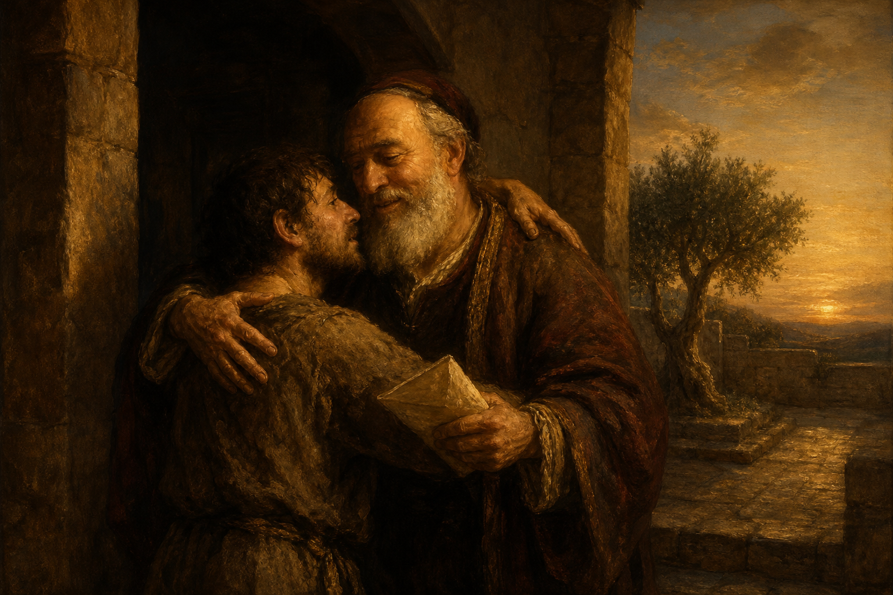

New Testament · Book 18 of 27
Philemon
A personal plea from Paul asks a slave owner to receive back a runaway servant not as property, but as a brother.
Paul's shortest and most personal surviving letter asks a friend to extend grace where the law would have permitted punishment.
Not now as a servant, but above a servant, a brother beloved.
What happens in Philemon
Writing from prison, Paul appeals to Philemon on behalf of Onesimus, a runaway slave who has since become a believer and a genuine help to Paul. Rather than commanding Philemon to forgive him, Paul appeals to their friendship and to love, offering to personally repay anything Onesimus owes while gently reminding Philemon that he owes Paul his own soul. The letter closes with warm greetings and Paul's confident expectation that Philemon will do even more than asked.
Why it matters
Philemon shows the gospel reshaping an ordinary, difficult relationship in real time, turning a master and a runaway servant into brothers. Its quiet appeal to love rather than authority has made it a touchstone for how grace changes how Christians treat one another.